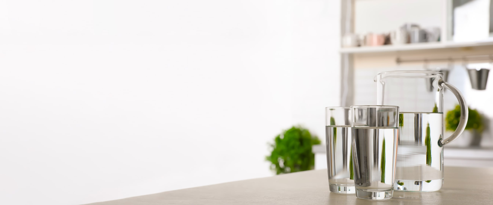

<div class="freshwater">
    <section class="freshwater__container">   
        <div class="freshwater__photo">
            <div class="wave-freshwater">
                
            </div>
            <div class="freshwater__img">
                
            </div>
            <div class="background-wrapper_RZ2" aria-hidden="true" data-background--hide="false" data-component="background" data-type="color" data-data-loaded="true">
                <div class="background_2xT" data-role="placeholder" data-selection-container="true">
                    <svg class="freshwater__icon" xmlns="http://www.w3.org/2000/svg" xmlns:xlink="http://www.w3.org/1999/xlink" version="1.1" x="0px" y="0px" viewBox="0 0 100 100" enable-background="new 0 0 100 100" xml:space="preserve" style="max-width:100%" height="100%">
                    <path d="M74.437,53.959c1.589-1.589,1.589-4.166,0-5.755c-0.416-0.416-40.529-25.479-40.766-25.598l-0.03-0.019l-0.002,0.001  c-0.539-0.263-1.136-0.424-1.775-0.424c-2.015,0-3.676,1.468-4.001,3.391L27.794,75.93c0,2.247,1.822,4.069,4.069,4.069  c0.635,0,1.228-0.158,1.763-0.417L74.437,53.959z" style="" fill="#ffffff"></path>
                    </svg>
                </div>
            </div>     
            <div>
                <h2 class="freshwater__title">Fresh & Healthy<br>Artesian Freshwater</h2>
                <p class="freshwater__description">Sparkle delivers spring freshwater from the region of<br>the Ouachita Mountains.</p>
            </div>
    </section>
        <div class="freshwater__facts">
            <div id="experience_id" class="experience__fact background-color-1">
                
                <h3 class="freshwater__subtitle">Experience</h3>
                <p class="freshwater__text">Sparkle team has delivered fresh spring freshwater for 12 years now across all the United States.</p>
            </div>
            <div id="any_bottle_size_id" class="anybottlesize__fact background-color-2">
                
                <h3 class="freshwater__subtitle">Any Bottle Size</h3>
                <p class="freshwater__text">We offer both 3 and 5 gallon bottles as well as small bottles for everyday home and office use.</p>
            </div>
            <div id="quick_delivery_id" class="quickdelivery__fact background-color-3">
                
                <h3 class="freshwater__subtitle">Quick Delivery</h3>
                <p class="freshwater__text">Fill out an application on our website and indicate the date — and our employees will bring freshwater on time.</p>
            </div>
        </div>
        </div>
    
</div>
